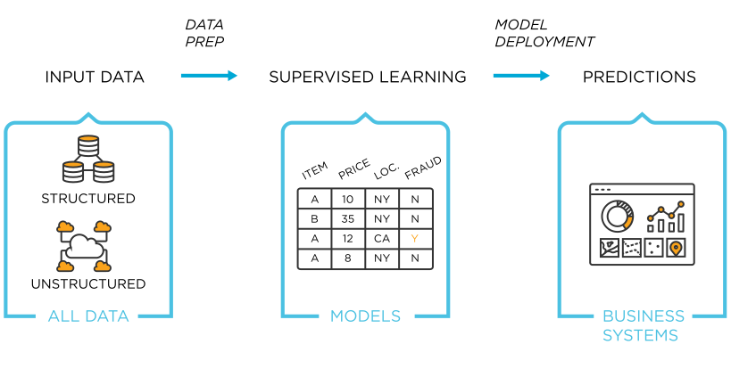
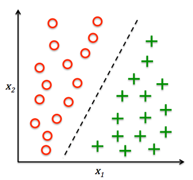
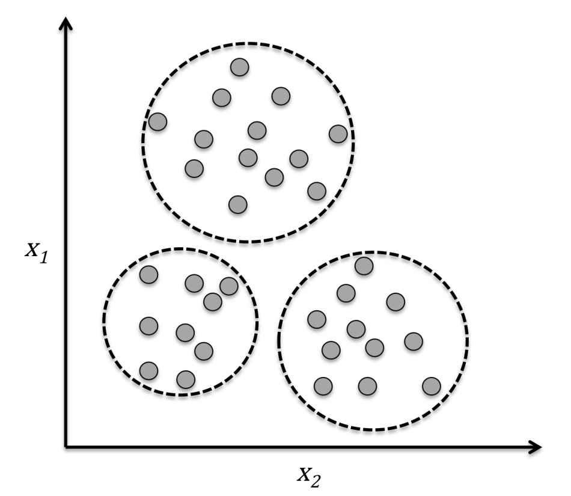
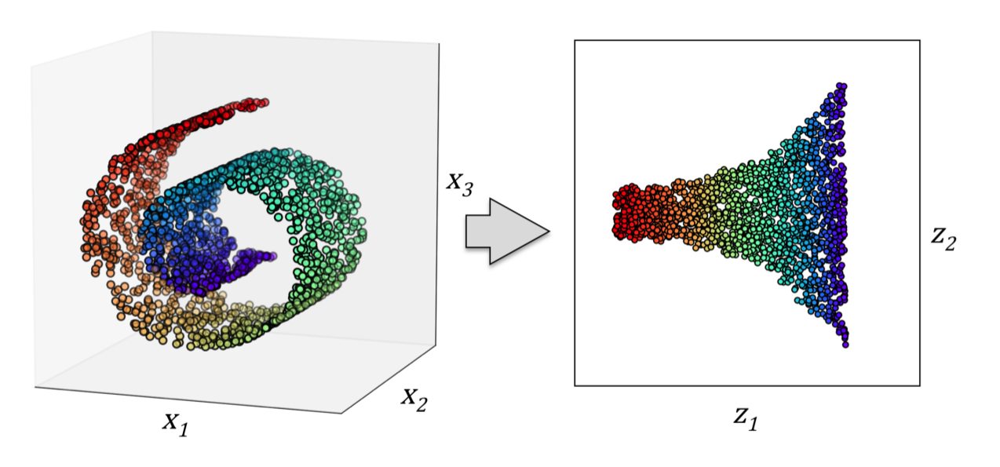
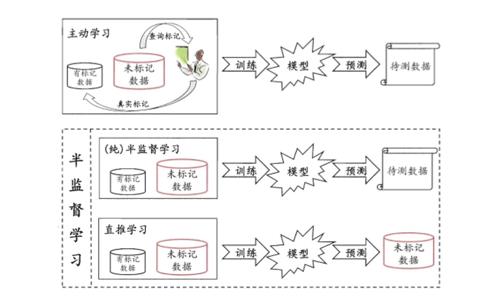
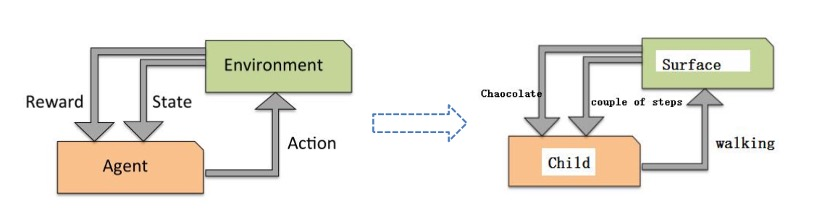

机器学习分类¶
学习目标¶
- 掌握什么是监督学习
- 掌握什么是无监督学习
- 了解什么是半监督学习
- 了解什么是强化学习
1. 监督学习¶
监督学习指的是人们给机器一大堆标记好的数据，比如：
- 一大堆照片，标记出哪些是猫的照片，哪些是狗的照片
- 让机器自己学习归纳出算法或模型
- 使用该算法或模型判断出其他没有标记的照片是否是猫或狗
上述流程如下图所示：

监督学习典型模型：Linear regression、Logistic regression、SVM、Neural network等
1.1 分类问题¶
分类是监督学习的一个核心问题 。在监督学习中：
- 当输出变量Y取有限个离散值时，预测问题便成了分类问题
- 监督学习从数据中学习一个分类模型或分类决策函数，称为分类器（classifer）
- 分类器对新的输入进行输出的预测（prediction），称为分类（classification）
分类问题包括学习和分类的两个过程：
- 在学习过程中，根据已知的训练数据集利用有效的学习方法学习一个分类器
- 在分类的过程中，利用学习的分类器对新的输入实例进行分类。
分类问题的典型应用场景如垃圾邮件识别就是一个2分类问题，使用相应的机器学习算法判定邮件属于垃圾邮件还是非垃圾邮件。如下图所示：
- 给出了30个训练样本集实例：15个样本为负类别（negative class，圆圈表示），15个样本为正类别（positive class，加号表示）
- 数据集是二维的，这意味着每个样本都有两个与其相关的值
- 通过监督学习算法获得一条规则，并将其表示为图中的一条黑色的虚线将两类样本分开，并且可以根据 值将新样本划分到某个类别中（看位于直线的那一侧）。

- 输出变量为有限个离散值的情况称为分类问题（classification）
- 如果类别为正类或负类的时候，这个是一个二分类问题
- 如果类别是一个多类别的时候，这就是一个多分类问题
1.2 回归问题¶
另一类监督学习方法针对连续型输出变量进行预测，也就是所谓的回归分析（regression analysis）。回归分析中，数据中会给出大量的自变量和相应的连续因变量（对应输出结果），通过尝试寻找自变量和因变量的关系，就能够预测输出变量。
比如生活中常见的房价问题：
- 横轴代表房屋面积，纵轴代表房屋的售价
- 我们可以画出图示中的数据点，再根据使得各点到直线的距离的平均平方距离的最小，从而绘制出下图的拟合直线
- 根据生活常识随着房屋面积的增加，房价也会增长

回归问题的分类有：
- 根据输入变量的个数分为一元回归和多元回归
- 按照输入变量和输出变量之间的关系分为线性回归和非线性回归
2. 无监督学习¶
通俗地讲：非监督学习(unsupervised learning)指的是人们给机器一大堆没有分类标记的数据，让机器可以对数据分类、检测异常等。

2.1 聚类问题¶
聚类是一种探索性数据分析技术，在没有任何相关先验信息的情况下（相当于不清楚数据的信息），它可以帮助我们将数据划分为有意义的小的组别（也叫簇cluster）。其中每个簇内部成员之间有一定的相似度，簇之间有较大的不同。这也正是聚类作为无监督学习的原因。
下图中通过聚类方法根据数据的 两个特征值之间的相似性将无类标的数据划分到三个不同的组中，例如：
- 我们可以用下图表示西瓜的色泽和敲声两个特征
- 我们可以将训练集中的西瓜分成若干组，每一组称为一个“簇”，这些自动形成的簇可能对应一些潜在的概念划分，如“浅色瓜”、“深色瓜”、“本地瓜”或“外地瓜”
- 通过这样的学习我们可以了解到数据的内在规律，能为更深入地分析数据建立基础。
需要注意的是我们事先并不知道西瓜是本地瓜、浅色瓜，而且在学习过程中使用的训练样本通常不拥有标记（label）信息。

2.2 数据降维¶
数据降维（dimensionality reduction）是无监督学习的另一个子领域。通常，面对的数据都是高维的，这就对有限的数据存储空间以及机器学习算法性能提出了挑战。无监督降维是数据特征预处理时常用的技术，用于清除数据中的噪声，能够在最大程度保留相关信息的情况下将数据压缩到额维度较小的子空间，但是同时也可能会降低某些算法准确性方面的性能。
如下图一个三维空间的数据映射到二维空间的实例。

3. 半监督学习¶
在现实生活中往往能容易地收集到大量未“标记”的样本，而获取有标记的样本却需要耗费人力、物力。例如：
- 在进行网页推荐时需要请用户标记出感兴趣的网页，但是很少的用户愿意花很多时间来提供标记
- 有标记的网页样本少，但互联网上存在无数网页可作为未标记样本使用
半监督学习提供了一条利用“廉价”的未标记样本的途径。
在处理未标记的数据时，常常采用“主动学习”的方式，也就是：
- 首先利用已经标记的数据（也就是带有类标签）的数据训练出一个模型
- 再利用该模型去套用未标记的数据
- 通过询问领域专家分类结果与模型分类结果做对比，从而对模型做进一步改善和提高
这种方式可大幅降低标记成本，但是“主动学习”需要引入额外的专家知识，通过与外界的交互来将部分未标记样本转化有标记的样本。
如果不与专家进行互动，没有额外的信息，还能利用未标记的样本提高模型的泛化性能吗?答案是肯定的，因为：
- 未标记样本虽然未直接包含标记信息，但它们与有标记样本有一些共同点
- 可以利用无监督学习的聚类方法将数据特征相似的聚在一个簇里面，从而给未标记的数据带上标记。这也是在半监督学习中常用的“聚类假设”，本质上就是“利用相似的样本拥有相似的输出”这个基本假设。
半监督学习进一步划分为了纯半监督学习和直推学习（transductive learning）
- 纯半监督学习假定训练数据中的未标记样本并不是待测数据
- 直推学习假设学习过程中所考虑的未标记样本恰恰是待预测样本
- 无论是哪一种，我们学习的目的都是在这些未标记的样本上获得最优的泛化性能（泛化简单的指的是模型无论对训练集表现效果好，对测试集效果也很不错，在模型选择中我们会详细讲解）。

4. 强化学习¶
【基础概念】强化学习（Reinforcement Learning）是机器学习的一个重要分支，主要用来解决连续决策的问题。比如：
- 围棋可以归纳为一个强化学习问题，我们需要学习在各种局势下如何走出最好的招法
- 要种出香甜可口的西瓜需要多次种瓜，在种瓜过程中不断摸索，总结出好的种瓜策略
将例子中的过程抽象出来就是“强化学习”。
强化学习不像无监督学习那样完全没有学习目标，又不像监督学习那样有非常明确的目标（即label），强化学习的目标一般是变化的、不明确的，甚至可能不存在绝对正确的标签
- 近些年来火热的无人驾驶技术是一个非常复杂、非常困难的强化学习任务，在深度学习出现之前，几乎不可能实现
- 无人驾驶汽车通过摄像头、雷达、激光测距仪、传感器等对环境进行观测，获取到丰富的环境信息，然后通过深度强化学习模型中的CNN、RNN等对环境信息进行处理、抽象和转化，在结合强化学习算法框架预测出最应该执行的动作（是加速、减速、转向等），来实现自动驾驶
- 当然，无人驾驶汽车每次执行的动作，都会让它到目的地的路程更短，即每次行动都会有相应奖励。
深度强化学习最具有代表性的一个里程碑是AlphaGo，围棋是棋类游戏中最复杂的游戏，19*19的棋盘给它带来了超过宇宙中原子数目的状态数。因此，计算机是无法通过像IBM深蓝那样暴力搜索来战胜人类，就必须给计算机抽象思维的能力，而AlphaGo做到了这一点。
如下图所示，强化学习目标是构建一个系统Agent，在于环境Environment交互过程中提高系统的性能。环境的当前状态信息中通常包含一个反馈/奖励(Reward)和状态State。Agent通过与环境Environment交互，Agent可以通过强化学习来得到一系列行为，通过探索性的试错或借助精心设计的激励系统使得正向反馈最大化。
Agent可以根据棋盘上的当前局势（环境）决定落子的位置，而游戏结束时胜负的判定可以作为激励信号。如下图：

5. 总结¶